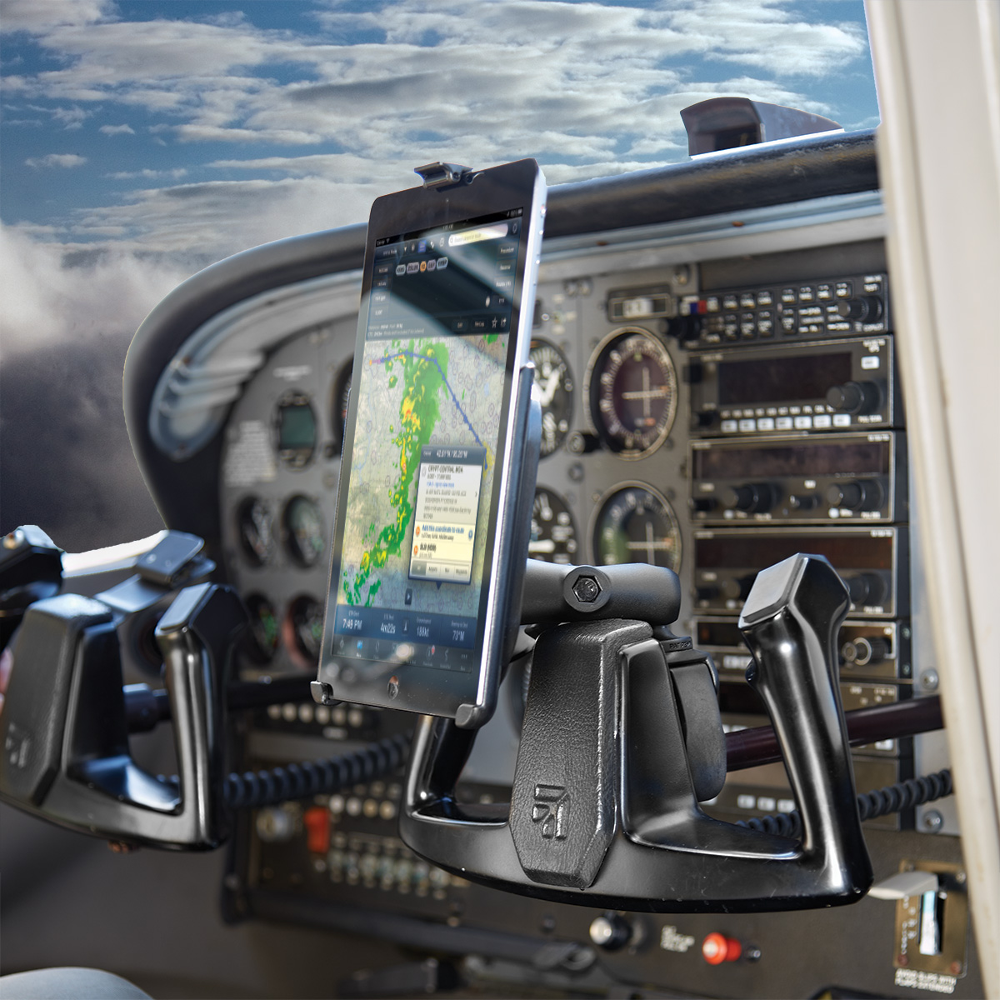
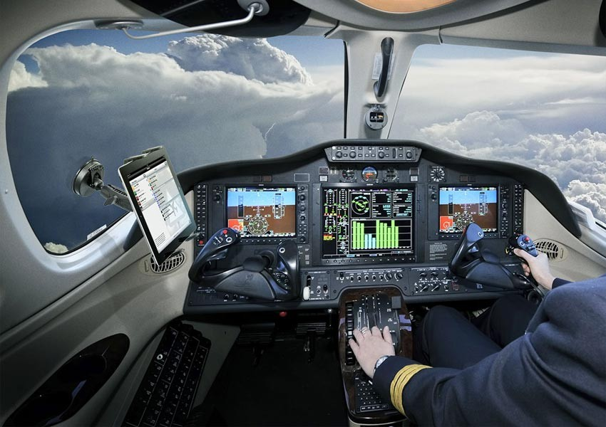

|  |
Integrated Software Development Cross platform development using Xamarin to deploy to Android, iOS, Web & Desktop. Using open-source softweare to integrate disparate data sources in to consolidated displays and interfaces. |
|
Unique Viewpoints Take advantage of new technologies to provide invigorating views on your data that was previously thought impossible. Use Virtual Reality to step in to the world of your money, and see how it looks from the inside. |
 |
|
Centralised data sourcing Using open-communication standards, use data from the core platform to provide real-time feeds to multiple other platforms. |
|
Discretion Cross platform development using Xamarin to deploy to Android, iOS, Web & Desktop. Using open-source softweare to integrate disparate data sources in to consolidated displays and interfaces. |